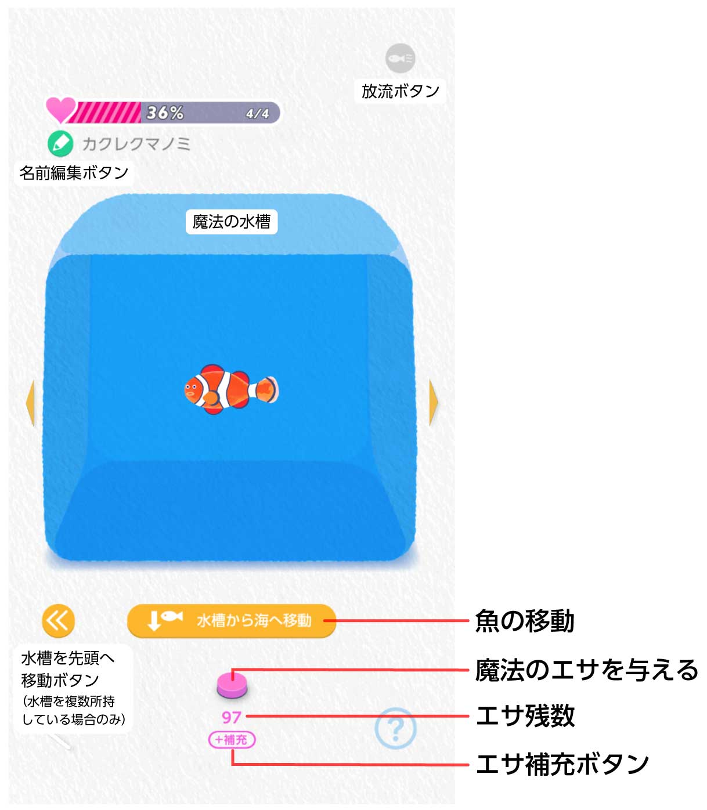
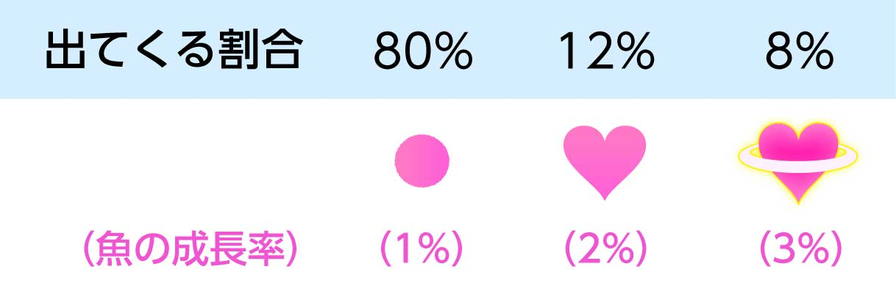

水槽を入手して魚を移動させると、以下のような画面になります。

img/Tank1.jpg
img/rarity.jpgログインボーナス
水槽を入手した翌日から、1日1回魔法の水槽の画面を開くと魔法のエサが1個もらえるようになります。
通知
設定の「エサやり通知」をONにすると、前回エサをあげた時間にエサやりを促す通知が届くようになります。
その他
エサを与えなくても、成長が減衰したり魚が弱ったりすることはありません。
成長バーが100%になると、水槽ではそれ以上成長しません。一度海に移動させて育ててください。
解説内の「魚」にはペンギンや他のいきものも含みます。